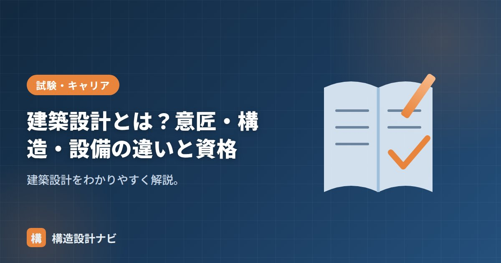

建築設計とは？意匠・構造・設備の違いと資格

建築設計とは、建物を建てるために必要な検討・図面作成・工事監理までを含む一連の業務のことです。ひとことで「設計」といっても関わる範囲は幅広く、実務では大きく意匠設計・構造設計・設備設計の3分野に分かれて進められます。本記事では、それぞれの分野が担う役割の違いと具体的な仕事内容、設計に携わるために必要な資格を整理して解説します。
- 建築設計は意匠・構造・設備の3分野に分かれ、それぞれ専門性が異なる
- 意匠設計が全体を統括し、構造・設備が専門分野を支える体制で1つの建物が完成する
- 大規模な建築物では構造設計一級建築士・設備設計一級建築士の関与が法律で義務付けられている
3分野の違い
| 分野 | 役割 | 主な検討 |
|---|---|---|
| 意匠設計 | 建物全体の計画・デザインをまとめる | プラン・空間・外観・法規・仕上げ・全体調整 |
| 構造設計 | 建物の安全（強さ）を担保する | 荷重・地震力・架構・部材・基礎 |
| 設備設計 | 快適・衛生・省エネを担保する | 電気・給排水・空調・防災設備 |
意匠設計が全体をまとめ、構造・設備が専門分野を担い、三者が協調して一つの建物をつくります。設計事務所や組織設計事務所では部門ごとに担当者が分かれるのが一般的で、それぞれが専門知識を持ち寄りながら1つの建物を完成させていきます。
意匠設計の仕事内容
意匠設計（英語では architectural design）は、建築主の要望をヒアリングし、敷地条件や法規制を踏まえながら、建物の平面計画・断面計画・外観デザイン・仕上げ材の選定などを行う仕事です。単に見た目を決めるだけでなく、動線計画や採光・通風の検討、用途地域・高さ制限・容積率といった法規への適合、そして構造・設備を含む他分野との調整まで担う、プロジェクト全体の司令塔的な役割を持ちます。
構造設計の仕事内容
構造設計は、意匠設計で決まった建物の形状に対して、自重や積載荷重、地震力、風圧力などの外力に安全に耐えられるよう、架構（骨組み）の形式や柱・梁・基礎などの部材断面を検討する仕事です。構造計算によって各部材に生じる応力や変形を確認し、必要な強度・剛性を確保します。地震国である日本では、構造設計は建物の人命に直結する重要な役割を担っています。
設備設計の仕事内容
設備設計は、電気設備・給排水衛生設備・空調換気設備・防災設備など、建物を「使える」状態にするための仕組みを計画する仕事です。快適性や省エネ性能はもちろん、火災時の排煙・消火といった安全面にも関わるため、意匠・構造の両方と綿密に調整しながら設計を進める必要があります。
必要な資格
- 一級建築士・二級建築士：規模に応じて設計・工事監理を行える基本資格。
- 構造設計一級建築士：一定規模以上の建築物の構造設計（または法適合確認）に必要。
- 設備設計一級建築士：一定規模以上の建築物の設備設計（または法適合確認）に必要。
小規模な建物であれば一人の建築士が意匠と構造を兼務することもありますが、規模が大きくなるほど専門分化が進み、それぞれの分野に精通した資格者の関与が求められるようになります。
大規模建築物では、構造は構造設計一級建築士、設備は設備設計一級建築士の関与が法律で求められます。専門分化が進んでいる分野です。
三者はどう連携するか
実務では、意匠設計者が作成した基本設計図をもとに、構造設計者・設備設計者がそれぞれの専門的な検討を行い、フィードバックを重ねながら実施設計図をまとめていきます。たとえば構造上必要な柱の位置や梁せい（梁の高さ）は天井高さや部屋の使い勝手に影響し、設備の配管・ダクトルートは梁の位置や大きさに左右されます。このように3分野は互いに制約し合う関係にあるため、設計の初期段階から密接な情報共有を行うことが、質の高い建物をつくるうえで欠かせません。
意匠・構造・設備がバラバラに検討を進めると、後工程で図面の不整合や手戻りが発生しやすくなります。実務では初期段階からの三者協議・調整会議が重視されます。
Q1. 就職するならどの分野を選ぶべきですか？
適性や興味による部分が大きいですが、デザインや空間づくりに関心があれば意匠設計、力学や構造計算が得意なら構造設計、設備機器やエネルギー・環境に興味があれば設備設計が向いているといえます。学生のうちに設計課題や構造演習を通じて自分の適性を見極めるとよいでしょう。
Q2. 意匠設計者でも構造の知識は必要ですか？
必須です。構造設計者に丸投げするのではなく、意匠設計の段階である程度の架構イメージを持っておくことで、後の構造検討がスムーズになり、無理のない合理的な設計につながります。
実施設計の終盤で、設備配管が梁を貫通する位置が構造検討時の想定とずれて梁せいを上げ直す、という場面を何度も経験しました。初回の調整会議で貫通位置の目安だけでも共有しておくと、後の手戻りがぐっと減ります。
まとめ
- 建築設計は意匠・構造・設備の3分野からなり、それぞれ専門性が異なる。
- 意匠が全体をまとめ、構造が安全性、設備が快適性・衛生・防災を担う。
- 大規模建築物では構造設計一級建築士・設備設計一級建築士の関与が必要。
- 3分野は互いに影響し合うため、初期段階からの連携・調整が重要になる。